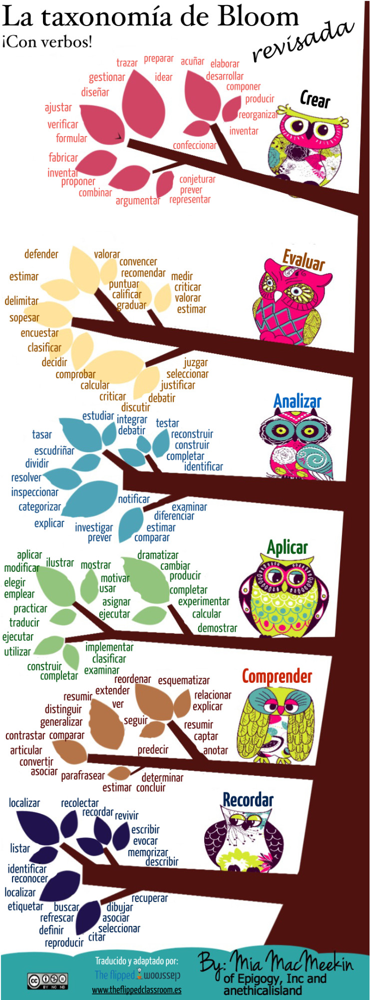
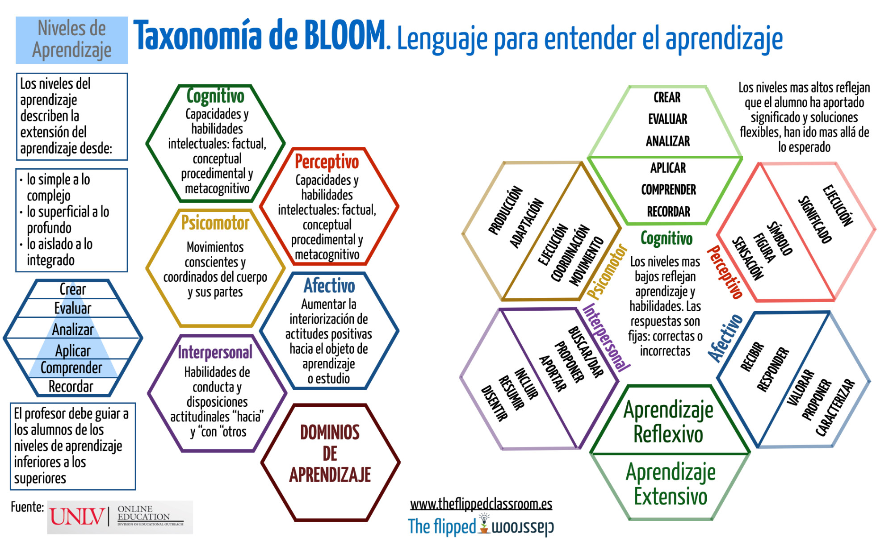

Actividades acordes con la taxonomía de Bloom "Digital"
Actividades FC acordes con la taxonomía de Bloom “Digital”
En 1956, el psicólogo educativo Benjamin Bloom y sus colaboradores idearon uno de los modelos perdurables para tratar de explicar cómo el aprendizaje debe estar estructurado y apoyado. Este modelo ha sido uno de los referentes para entender los procesos cognitivos y trata de aclarar cómo llevar a los estudiantes desde la “retención” de los conocimientos básicos a niveles más profundos de aprendizaje. En la década de 1990 se actualizó el modelo para reflejar con mayor precisión la teoría del constructivismo.
Como una de las piezas fundamentales del pensamiento educativo actual, a través de la taxonomía del aprendizaje de Bloom, parece adecuado revisar cómo y por qué se debe dar “la vuelta” para un estudiante del siglo 21. En teoría, la taxonomía funciona como una serie de pasos para ayudar a los alumnos a “ascender” de niveles de pensamiento de orden inferior a otros de orden superior. Creemos interesante profundizar y aportar ejemplos prácticos de cómo llevarlo a cabo. Habitualmente, los estudiantes comienzan con las tareas más básicas como recordar hechos, cifras y otros datos; después se sigue un proceso mas o menos estructurado, a través de la comprensión de la información, la aplicación de nuevos procedimientos o estrategias, el análisis para entender sus partes, la evaluación de la información y, finalmente, la creación de nueva información, tanto de un “producto”, como de un proceso o de un nuevo punto de vista sobre la base de la información original (Overbaugh y Schultz,la taxonomía de Bloom ). En general, se acepta que la mayoría de los alumnos no lleguen (o lleguen tarde) a la parte superior de la pirámide de Bloom (que representa los niveles complejos, abstractos de pensamiento). Como Wright afirma en su artículo, “es probable que sólo los académicamente expertos lleguen a la cima” En este gráfico proponemos algunas actividades prácticas para el trabajo con cada uno de los niveles taxonómicos.

Formación en Red del INTEF
Licencia Creative Commons Atribución-CompartirIgual 4.0 Internacional.
Verbos y lenguaje para entender el aprendizaje
Bloom y verbos que identifican las fases



Metodologías activas, didáctica y evaluación por varios autores bajo licencia Creative Commons Reconocimiento-NoComercial-CompartirIgual 4.0 Internacional License.